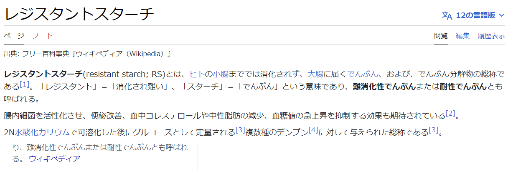

こんにちは、ザクザク食感です。
みなさ～ん！うんち、出してますか？
地獄に落ちろ！！！！！
僕は生まれてから20年、ずっと便秘気味です。
幼少期の頃は特にひどく、腹痛で動けなくなり、救急車に運ばれたことがあります。
大きめの病院に運ばれ、ドデカ浣腸をされ、レントゲンを撮られたのですが、その結果お医者さんに「S状結腸がループ状になっている」と診断されました。
S状結腸というのは、大腸の最後の方のことです。その部分がループ状ってことは……
グリーンヒルゾーンやないですかい！！！！！
つまり、うんちがソニックぐらい早くないとS状結腸を突破できないということです。
医師によるとこれは成長と共に治ることがほとんどなので大丈夫とのことだったので、半年程前に一応検査を受けに行ったのですが、ちゃんと治っていました。
ですが、肝心な便秘の方は治っていません。
しかも、便秘の人は鬱になりやすいという話も聞きます。腸内環境がセロトニンの分泌に関係しているらしいです[1]。
僕がネガティブになりがちなことの原因がこれだったなら、まともな人間になるためにも治さないわけにはいかないです。
せっかく一人暮らしで食べるものを選べるので、最近はずっとキャベツの味噌汁と納豆とヨーグルトを食べています。
意識的にそれらを食べるようになってから、うんちに行く機会は増えた気がしますが、毎回全長の1/6ぐらいだけが出てきているみたいな感じがするので、便秘が改善したとは言い難いです。
わりと健康的な生活をしているのになぜだ……
アフィサイトをくぐり抜けながら、原因を探りました。すると、レジスタントスターチというワードが引っかかりました。

これか……
レジスタントスターチはお米などに多く含まれているようです。
僕は白ご飯が大好きすぎますが、ダイエットのために（あとお金がなくて炊飯器が買えない）お米を食べないようにしています。
お米は悪だとしか思っていなかったので、かなり面食らいました。これからはちょっとずつ摂取していこうと思います。
松岡修造もそう言ってたし
それでは、さようなら。
[1]過敏性腸症候群とセロトニン．谷 莉, 福土 審．https://www.jstage.jst.go.jp/article/jjpm/50/1/50_KJ00005928268/_article/-char/ja/